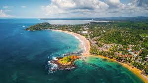
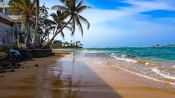
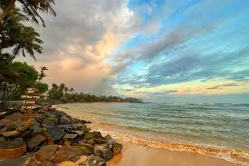

Mirissa
 
Mirissa is a small town on the south coast of Sri Lanka, located in the Matara District of the Southern Province.
It is approximately 150 kilometres (93 mi) south of Colombo and is situated at an elevation of 4 metres (13 ft) above sea level.
Mirissa's beach and nightlife make it a popular tourist destination.
It is also a fishing port and one of the island's main whale and dolphin watching locations.
Mirissa is the largest fishing port on the south coast and is known for its tuna, mullet, snapper, and butterfish.
In 1980 the first tourist accommodation was built, and in the mid-1990s tourism to the town started to increase dramatically.[2]
Mirissa was affected by the tsunami caused by the 2004 Indian Ocean earthquake, with numerous homes,
guesthouses, shops, schools, and temples destroyed or damaged and fourteen reported deaths.
Mirissa is located on the A2 Highway, connecting Colombo to Wellawaya;
the town is approximately 2 kilometres (1+1⁄4 miles)
west of Mirissa railway station – on the Coastal or Southern Rail Line (connecting Colombo through to Matara) – and it is approximately 13 kilometres (8 miles) from the Kokmaduwa
Interchange of the Southern Expressway.
 Location (Mirissa Beach)